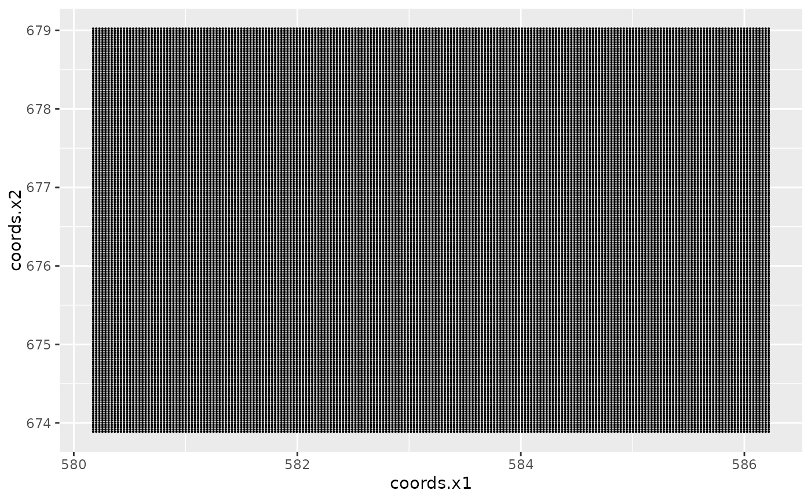

Uses geom_point to plot the pixel centers.
Requires the ggplot2 package.
# S3 method for SpatialPixels
gg(data, ...)A SpatialPixels object.
Arguments passed on to geom_tile.
A geom_tile return value.
Other geomes for spatial data:
gg.SpatialGridDataFrame(),
gg.SpatialLines(),
gg.SpatialPixelsDataFrame(),
gg.SpatialPoints(),
gg.SpatialPolygons(),
gg(),
gm()
if (require("ggplot2", quietly = TRUE)) {
# Load Gorilla data
data(gorillas, package = "inlabru")
# Turn elevation covariate into SpatialPixels
pxl <- SpatialPixels(SpatialPoints(gorillas$gcov$elevation))
# Plot the pixel centers
ggplot() +
gg(pxl, size = 0.1)
}
